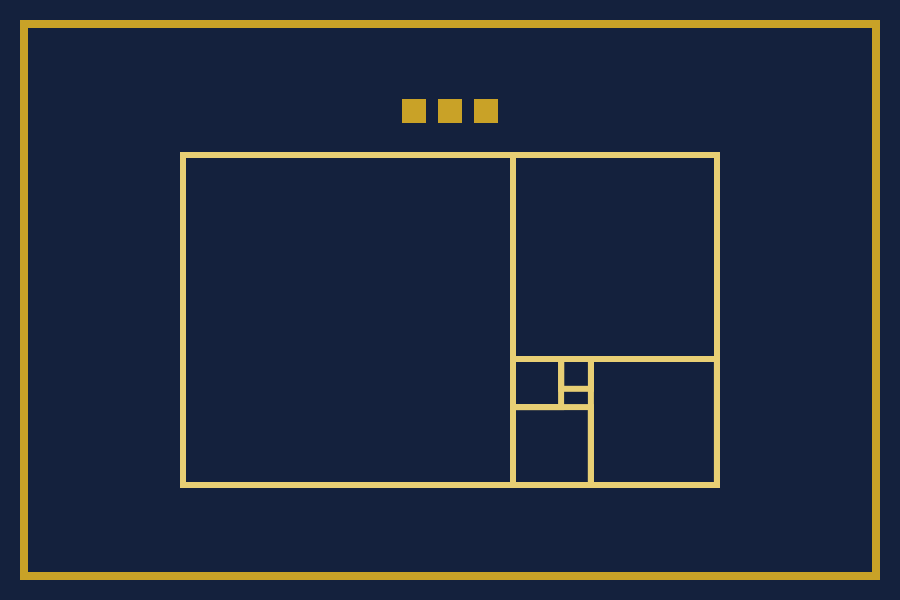
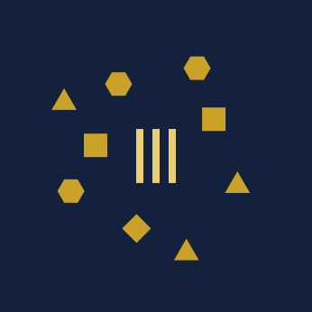

これは創作であり、遊びです。ヌスクァマは国家ではなく、いかなる実在の国家・王室・騎士団・叙勲・称号とも関係がありません。ここで贈る騎士の呼び名は、勲章・栄典・騎士の位ではなく、法的な効力もありません。
国のしるし
これは創作であり、遊びです。ここに挙げるしるしは、どれも実在の国家・王室・騎士団・叙勲の旗や記章ではなく、それらに代わるものでもありません。
国のしるしは、国章と国旗と版図の地図です。どれも国章と同じく、長方形と多角形だけで描いてあります。文字の書体を使わないので、どの端末でも同じ形に描かれます。国旗と国章の作図を手順ごとの図で追い、国の色と版図の区画の形を一枚にまとめた頁が、しるしの作図です。
国旗

- 紺の地に金の縁。国章の盾と同じ色です。
- 中央に黄金比の矩形を描きます。国章の上半分と同じ形です。
- 矩形の上に、三つの角石を並べます。
帯を横や縦に並べる形は取りません。実在の国の旗と紛れないようにするためです。
版図の地図

基本法第三条により、版図は王の本棚と、王が公にした正誤表です。地図の中央の三本の柱が王の本棚です。そのまわりの金の区画が、王の正誤表に記した誤りです。誤りを一つ記すたびに、区画が一つ増えます。地図は正誤表から作り、手で描き足しません。年の終わりごとの地図は、年ごとの版図の頁で、同じ縮尺で並べて比べられます。
国旗の作図
国旗は、横 900、縦 600 の比（3:2）で描きます。数は、国旗の画像の座標そのままです。

- 紺の地を塗る。
- 端から 24 内側に、太さ 8 の金の縁を引く。
- 横 534、縦 330 の黄金比の矩形を、明るい金の線（太さ 6）で描く。左上の角は (183, 155) に置く。
- 矩形から、正方形を一つずつ切り出す。辺は 330、204、126、77.9、48.1、29.8 と、黄金比で小さくなる。
- 矩形の上に、辺 24 の金の正方形（角石）を三つ、間を 12 空けて並べる。上の端は 99 に置く。
国章の作図
国章は、横 600、縦 720 の枠に描きます。数は、国章の画像の座標そのままです。

- 金の盾を描き、その内側に紺の盾を重ねる。上と左右に、太さ 20 の金の縁が残る。
- 盾の上半分に、横 360、縦 222.5 の黄金比の矩形を、正方形に切り分けた形で、明るい金の線（太さ 4）で描く。左上の角は (120, 112) に置く。正方形の辺は 222.5、137.5、85、52.5、32.5、20.1 と、黄金比で小さくなる。
- 盾の頂に、辺 18 の金の正方形（角石）を三つ、間を 10 空けて並べる。上の端は 76 に置く。
- 剣を、切っ先を下に向けて描く。柄頭と鍔は金、握りと刃は明るい金、刃の溝は深い紺で塗る。切っ先は 632 に届く。
旗の掲げ方
- 国旗は、画面の上でだけ掲げます。王は、布や紙の旗を作りません。
- 実在の国の旗と並べて、同じ扱いに見せることはしません。
- 国旗と版図の地図も、文と国章と同じく CC BY 4.0 です。使い方の決まりは名称と権利にあります。
国の色
| 名 | 色番号 | 使うところ |
|---|---|---|
| 紺 | #14213d | 盾と国旗の地、地図の海 |
| 金 | #c9a227 | 縁、角石、地図の区画 |
| 明るい金 | #e8cf74 | 黄金比の矩形、剣、地図の本棚 |
| 深い紺 | #0b1428 | 国章の剣の溝 |
国旗と版図の地図は、紺・金・明るい金の三色だけで描きます。
国の書体
しるしは、書体を使いません。どの端末でも同じ形に描かれるようにするためです。頁の文は、読む人の端末にある明朝体で示します（ヒラギノ明朝、游明朝、Noto Serif JP の順に探します）。書体のファイルは配りません。
国の記号
文字だけで国を表すときは、∅（空集合の記号、U+2205）を使います。どこにもない国だからです。絵文字は使いません。端末ごとに形が変わるからです。
国の生き物と花
- 国の生き物：かたつむり。通った所に跡を残すからです。王が誤りの跡を残すのと同じです。
- 国の花：わすれなぐさ。誤りを忘れないためです。
どちらも、絵ではなく言葉で定めます。絵にすると、実在の記章と紛れるおそれが増えるからです。
国の時刻と単位
- 国の時刻は、日本標準時と同じです。日付の変わり目も同じです。
- 版図の広さは「誤」で数えます。王の正誤表の一件が一誤です。
国歌の詞
曲はありません。詞だけを置きます。歌う決まりはありません。
- 一 どこにもない海の上／王の本棚、三つの柱／誤りひとつ認めるたび／島はひとつ広がりぬ
- 二 剣は抜かずに下を向き／盾に残すは日付と文／消した誤りは二度目の誤り／消さぬ誤りはわが領土
- 三 誰でもない王ひとり／己を治め、己を正す／位はひとつ、騎士ひとつ／金は取らずに名を記す
商標
運営者は、国の名・国章・国旗を、商標として出願しません。しるしを独り占めしないためです。
作らないもの
利用規約のとおり、ヌスクァマは勲章・記章・制服・証書などの物を作らず、配りません。騎士にも、徽章や叙任状は出しません。叙任は、騎士の名簿にアカウント名を載せるだけです（叙任の規程）。